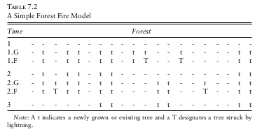
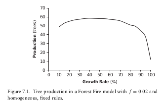
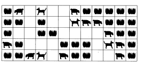
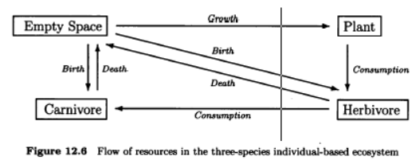

14 Proyectos Avanzados
14.1 Simple economy
En las últimas dos décadas, ha habido un creciente interés y uso de modelos basados en agentes en las ciencias sociales. Los métodos basados en agentes pueden ser particularmente valiosos en la ciencia social donde los agentes son heterogéneos y las descripciones matemáticas a menudo no ofrecen suficiente poder descriptivo. Varias comunidades prominentes se han organizado en torno al uso métodos de sistemas complejos y modelos basados en agentes en las ciencias sociales. Entre estos son la Asociación de Ciencias Sociales de Sistemas Complejos (CSSSA) y el Congreso Mundial en Simulación Social (WCSS), En los últimos años, organizaciones como la Asociación Estadounidense de Investigación Educativa (AERA), la Asociación de Economía del Este y Asociación Americana de Geógrafos (AAG) han organizado sesiones sobre la intersección de modelos sociales y modelos basados en agentes. Un área que ha recibido una atención creciente de la comunidad MOBA son las ciencias económicas.Las economías consisten en actores heterogéneos como compradores y vendedores, de ahí que es natural el uso de estos modelos y métodos a la economía. En 1996, los economistas, Josh Epstein y Robert Axtell publicaron un libro que representaba un mundo artificial llamado SugarScape, que fue poblado por agentes económicos. En esta sección,crearemos un modelo económico muy simple que tiene algunos resultados sorpresivos. Supongamos que se tiene un número fijo de personas, digamos 500, cada una con la misma cantidad de dinero, digamos U$ 100. En cada instante de tiempo (tick), cada persona da uno de sus dólares a cualquier otra persona al azar.
- ¿Qué pasará con la distribución del dinero a largo plazo?
Una importante restricción de este modelo es que la cantidad total de dinero permanece fija, por otro lado nadie puede tener menos que cero dinero, Si alguien se queda sin dinero, nadie le puede prestar o regalar y debe esperar nada hasta que alguién al azar le entregeue un billete. Refinando un poco más la pregunta, podría ser:
¿Existirá una distribución limitante estable del dinero? Si es así, ¿cuál? ¿se concentrará toda la riqueza en unos pocos manos o se distribuirá equitativamente?
Muchas personas, cuando se les plantea esta pregunta, tienen la intuición de que existe una distribución y que es relativamente plana. El razonamiento detrás de la intuición es que dado que ninguna persona comienza con ventaja y la selección de personas a quienes se les transfiere dinero es totalmente aleatorio, ninguna persona debería tener una gran ventaja sobre las demás. Por lo tanto, la la distribución de riqueza resultante debería ser relativamente plan y todos deberían terminar con aproximadamente la misma cantidad de dinero con la que comenzaron. Otras personas tienen la intuición de que la riqueza debería distribuirse de forma normal, Para explorar esta cuestión lo invito a construir el modelo.

14.2 Fuego en Linea
Considere un mundo en el que los árboles crecen a lo largo de una línea recta. cada parcela de la recta es adecuada para que crezca un árbol. Cada primavera hay una probabilidad fija, q, de que un árbol nazca en una parcela desocupada. Para hacer las cosas simples, una vez el árbol nace, crece de inmediato a su tamaño completo y permanece así a menos que caiga al suelo. En el verano, tormentas eléctricas caen sobre los árboles y Cada celda tiene una probabilidad f de ser alcanzada por un rayo. Si un árbol es alcanzado, se incendia y la conflagración se extiende a todos los árboles contiguos, las eldas vacías actúan como amortiguadores del fuego ya que evitan su propagación. La tabla 7.2 ilustra un ejemplo de incendio forestal:

En el período 1, el bosque esta vacio. Durante la fase de crecimiento (1.G), los árboles surgen espontáneamente en la linea en lugares designados por “t”. Durante la temporada de rayos, algunos árboles son golpeados y prendidos en llamas; así en el tiempo 1.F dos árboles (designados por “T”) han sido golpeados. Al comienzo del período 2, los árboles golpeados y cualquier vecino conectado ha sido quemados y caen al suelo. Este ciclo de crecimiento y fuego continúa durante los períodos de tiempo posteriores.
Producción del Bosque
Este modelo basado en agentes es muy simple. Los agentes son las parcelas individuales. Cada agente sigue una regla idéntica y fija. En la primavera, si su estado está actualmente vacío, cambie su estado a tener un árbol con probabilidad g; de lo contrario, mantiene su estado actual. En el verano, si en la parcela hay un árbol, hay una probabilidad f de incendiarse o incendiarse si algún árbol contiguo se ha incendiado. Una vez un agente se incendia, vuelve al estado vacío. A pesar de su simplicidad, este modelo produce algunos resultados provocativos. Defina la producción del bosque como el número promedio de árboles que se encuentran de pie al final del verano. En La siguiente figura se muestra la producción para varias tasas de crecimiento en un bosque con cien parcelas y una probabilidad de rayo del 2 por ciento. La producción alcanza su pico a una tasa de crecimiento del 43 por ciento.

Los cambios en la producción a medida que aumentan las tasas de crecimiento es el resultado de dos fuerzas compensatorias :
- La primera fuerza es la tasa de crecimiento misma, como aumenta, es más probable que los lugares vacantes estén ocupados por árboles y es mayor la productividad potencial del bosque.
- La segunda fuerza son los rayos,a medida que aumentan los rayos, es más probable que un árbol sea destruido por el fuego. Además, los rayos no solo impactan en árboles individuales sino los árboles contiguos. Por lo tanto, la densidad de los árboles es importante.
A altas tasas de crecimiento, casi todos los árboles son contiguos, y todo lo que se necesita es un rayo para derribar todo el bosque. Esto implica un compensación entre estas dos fuerzas: un crecimiento más rápido significa más árboles, pero más árboles implican colecciones contiguas más grandes de árboles, que promueven fuegos más grandes. En Una versión bidimensional (piense en los árboles que crecen en un tablero de ajedrez), el modelo muestra una conexión mucho más dramática entre producción y crecimiento. En tal modelo hay un cambio muy dramático en la producción a medida que se modifican las tasas de crecimiento.En términos técnicos, tal cambio dramático se conoce como una transición de fase, y se puede demostrar (a través de la teoría de percolación) que hay un “valor crítico” de g que resulta en que el sistema pasa de una colección de árboles en gran parte desconectada a una en el que todos los árboles están conectados entre sí como uno solo.

14.3 Un modelo básico de comercio (Toy Trader)
Como consumidor, una vez se identifica lo que quiere, en la mayoría de los casos, el siguiente paso más importante es determinar dónde puede estar ese bien o servicio al precio más bajo. Como vendedor, usted ajusta sus precios de acuerdo con lademanda. Muchas empresas usan el inventario como un proxy de la demanda:
- Si el producto no se mueve o el inventario se está acumulando, entonces se supone que la demanda es demasiado baja a ese precio y, por lo tanto, el precio se reduce.
- Si el inventario está disminuyendo rápidamente, el producto se está agotando, aumentando el precio reduce la demanda y le permite al vendedor ganar más dinero.
Una forma simple de administrar el inventario es tener un objetivo de inventario y usar el precio para mantenerlo en nivles deseados. Estas son las dinámicas que forman la base del Toy Trader modelo que exploraremos y que llkamaremos “Toy Trader”
Imagine que ud se encuentra en un mundo de 51 metros × 51 metros dividido en celdas de un metro por un metro, en el se encuentran 400 personas distribuidas de manera aleatoria, Usted (y todos los demás) reciben inicialmente US100 y 5 juguetes. El precio de cada juguete se coloca inicialmente en US10 cada uno. Primero, usted (y todos los demás) deben encontrar el precio más bajo de un juguete a una distancia de un metro. Si el precio más bajo disponible lo tienen dos ó más juguetes con el mismo precio, se elige uno al azar. Si hay un juguete disponible,y ud puede pagar el precio, debe comprar el juguete. Al mismo tiempo, las personas que se envuentran dentro del alcance de un metro de ud, verificarán el precio de sus juguetes para ver si son los más baratos de la zona y en ese caso lo comprarían. Su objetivo es utilizar el precio para reducir y mantener su inventario en 3 juguetes. Después de cada instancia de venta de un juguete, se revisa el inventario y, si es demasiado alto (más de 3), ud baja el precio multiplicandolo por 0,99. Si es demasiado bajo (menos de 3), aumenta su precio en múltiplicandolo por 1.0101. Después de que todos hayan intentado comprar un juguete, usted (como todos los demás) gira de manera laeatoria y avnza un metro a una celda contiogua, Esto concluye una iteración del modelo Toy Trader.
Resumiendo:
El modelo Toy Trader utiliza un población de 400 agentes. Cada agente se inicia con Us 100 y 5 juguetes En todo el sistema, el stock de juguetes y dinero es fijo e inmutable( 40,000 (400 × 100) dinero y 2000 (5 × 400) juguetes.) Inicialmente, 400 agentes se colocan aleatoriamente dentro de un cuadrado de 51 × 51 topología de red toroidal, lo que significa que si alguien se aleja de un borde,reaparecen en el lado opuesto. Durante cada iteración, todos los agentes tratan de comprar un solo bien de otro agente al precio más bajo entonces la demanda total es de 400 juguetes por iteración (también es fija). Como los agentes quieren 3 juguetes en su inventario, a largo plazo, se demandan 1200 juguetes de un sistema de suministro de 2000.El sistema está en perpetuo exceso de oferta. No hay razones sistémicas para que cualquiera se vuelva pobre.
Definiciones de Riqueza
En el modelo Toy Trader, hay muchas definiciones posibles de riqueza, se pueden usar tres:
- solo dinero.
- solo juguetes ó
- activos (dinero + juguetes x precio promedio).
Esto nos permite rastrear tres posibles distribuciones de riqueza. Un artículo de Dragulescu y Yakovenko sugiere que si el suministro de bienes es constante, como es el caso en estos experimentos, todas las cantidades deben ir a un Distribución de Boltzmann-Gibbs (0.5 coeficiente de Gini).
¿Puede construir el modelo y verificar esta hipotesis?

14.4 Un Eco-Sistema
Introducción
El modelo Lotka-Volterra brinda una visión general al dinamismo entre varias especies en un ecosistema, al ignorarvariaciones en individuos y asumiendo que todos los miembros de una especie son idénticos o lo suficientemente similares como para que las diferencias entre elos se puedan ignorar.Una técnica de modelado relativamente nueva en la disciplina de la ecología. es la modelación basada en agentes (MOBA), y está basado en el individuo (agente), ya que permite modelar cada miembro de una población por separado.
Descripción del Modelo

En nuestro ecosistema hay tres tipos de especies:
- plantas
- herbívoros
- carnívoros
Tenemos una cuadrícula finita como se muestra en la anterior figura, cada celda está vacía ó tiene una sola planta o animal en ella. Las plantas crecen en espacios vacíos, los herbívoros comen plantas y se mueven por el espacio, y los carnívoros comen herbívoros y también se mueven. Ya que cada criatura consume un tipo de recurso disitinto (la planta “consume” un espacio vacío para crecer), puede ser útil consultar La siguiente figura, que ilustra el manejo de recursos en nuestro ecosistema:

Los tipos de acciones o interacciones (comportamiento) obedecen las siguientes reglas:
Para cada instante de tiempo (tick):
- Para cada celda vacía, e:
- Si se tiene 3 o más vecinos que son plantas, entonces se convierte en planta (asumiendo que en la celda no hay ni un herbívoro ni un carnivoro)
- Para cada herbivoro, h:
- Disminuya reservas de energía de h una cantidad fija.
- si h no tiene energía, h muere y la celda queda vacía.
- Sino, si hay una planta vecina a h, h se mueve sobre la planta, la consume y gana la energía de la planta
- si h tiene suficiente reserva de energía, entonces produce un bebé herbivoro en la celda en la que estaba.
- Sino, h se mueve a un espacio vacio al azar (si existe) cerca a donde se encuentra.
- Para cada carnivoro, c:
- Disminuya reservas de energía de c una cantidad fija.
- si c no tiene energía, c muere y la celda queda vacía.
- Sino, si hay un herviboro vecino a h, h se mueve sobre el, lo consume y gana la energía del herbivoro.
- si c tiene suficiente reserva de energía, entonces produce un bebé carnívoro en la celda en la que estaba.
- Sino, c se mueve a un espacio vacio al azar (si existe) cerca a donde se encuentra.Si no hay espacio vacio c se mueve donde hay una planta

Comentarios del modelo
Hay varios lugares en los que se utiliza la aleatoriedad.Además de utilizar un orden de actualización aleatorio para los animales, suponemos que los animales tomará una decisión aleatoria cuando se le presente más de una opción para una acción.Por ejemplo, si un herbívoro tiene tres plantas como vecinas cercanas, el herbívoro puede moverse a cualquiera de las tres plantas. Del mismo modo, un carnívoro dará un paso al azar si no hay herbívoros en sus proximidades. Por lo tanto, el modelo individual combina procesos deterministas y aleatorios, al igual a como sucede en el mundo real.
Pregunta
¿Podría construir un modelo de 100x100 celdas y correrlo durante 1500 ticks y observar que sucede con las poblaciones de las tres especies?